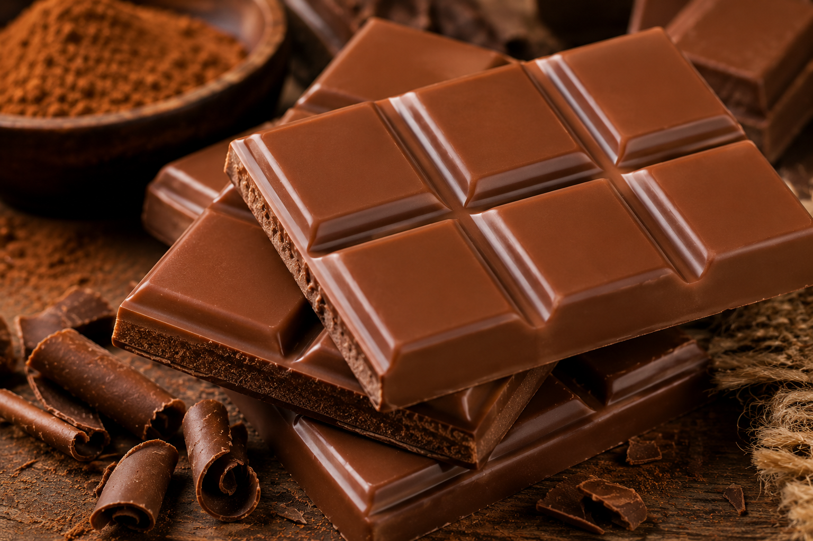
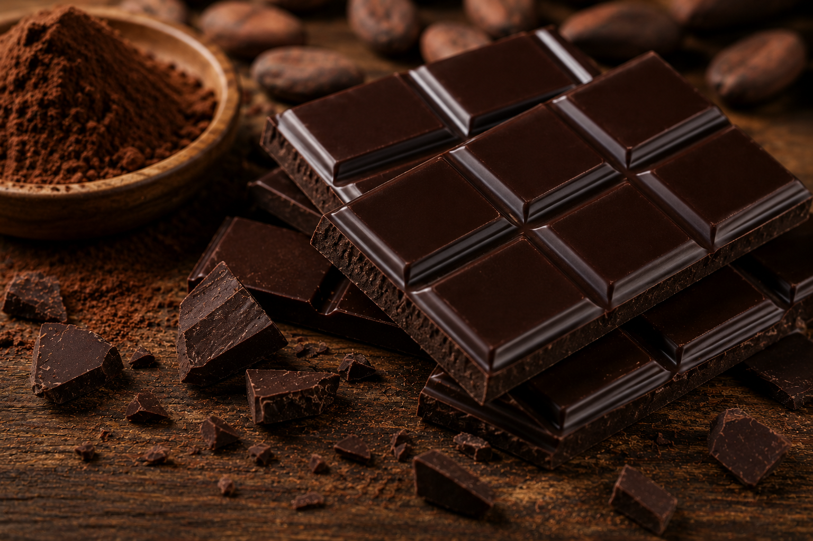
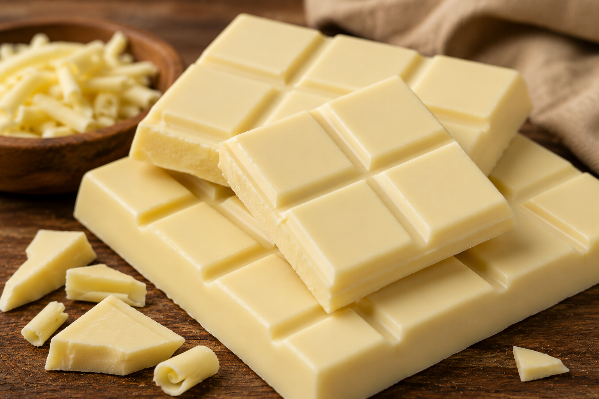
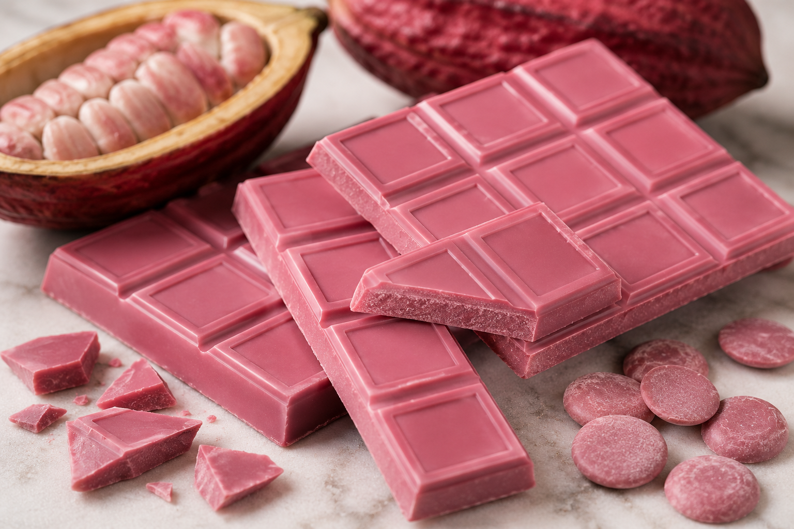

| Tipo | Características | Descrição |
|---|---|---|
| Chocolate ao Leite | Cremoso e doce, feito com cacau, leite e açúcar. | E o tipo mais popular e apreciado por topos as idades. |
| Chocolate Amargo | Rico em cacau e com menos açúcar. | Possui sabor intenso e marcante, ideal para quem prefere um chocolate mais puro. |
| Chocolate Branco | Feito com manteiga de cacau, leite e açúcar. | Possui sabor doce e textura suave e aveludada. |
| Chocolate Ruby | Feito a partir do cacau ruby, que naturalmente possui uma cor rosada e sabor frutado. | Levemente ácido, com notas de frutas varmelhas. |
Tipos de Chocolates



